Texto <14 px: 124 · Texto <16 px: 153 · Secciones: 15 · Tarjetas aprox.: 63
Auditoría visual y legibilidad V1
Comparación reproducible de escritorio y móvil, acompañada por tamaños computados en el navegador.
28vistas auditadas
1392textos menores de 14 px
1660textos menores de 16 px
0cargas fallidas
Texto <14 px: 44 · Texto <16 px: 58 · Secciones: 2 · Tarjetas aprox.: 6
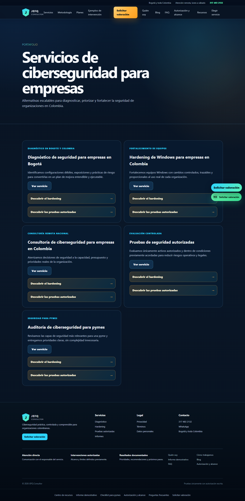
Texto <14 px: 40 · Texto <16 px: 54 · Secciones: 5 · Tarjetas aprox.: 6
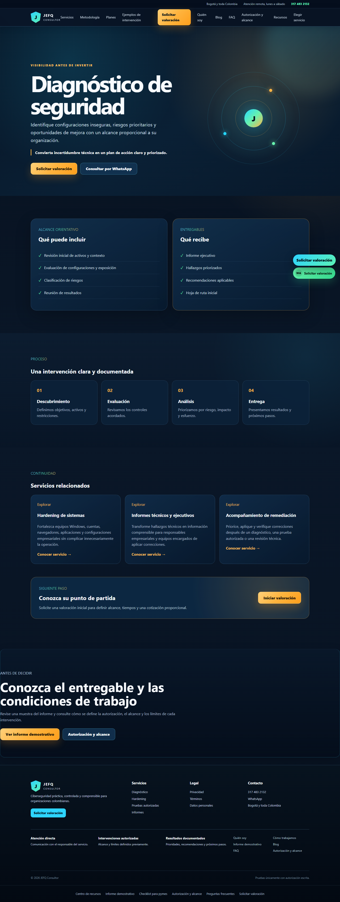
Texto <14 px: 40 · Texto <16 px: 54 · Secciones: 5 · Tarjetas aprox.: 6
Texto <14 px: 40 · Texto <16 px: 54 · Secciones: 5 · Tarjetas aprox.: 6
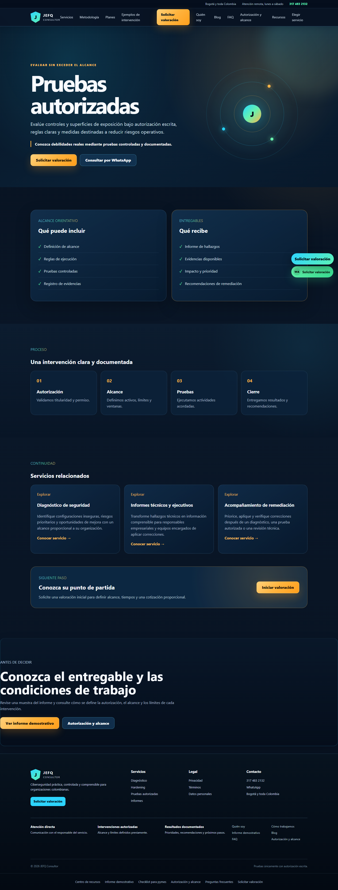
Texto <14 px: 87 · Texto <16 px: 101 · Secciones: 4 · Tarjetas aprox.: 16
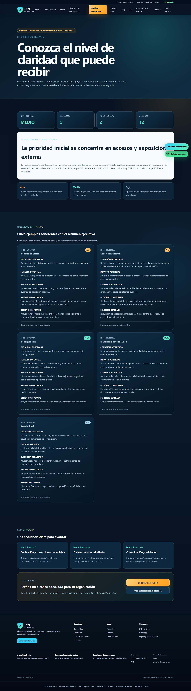
Texto <14 px: 42 · Texto <16 px: 56 · Secciones: 2 · Tarjetas aprox.: 0
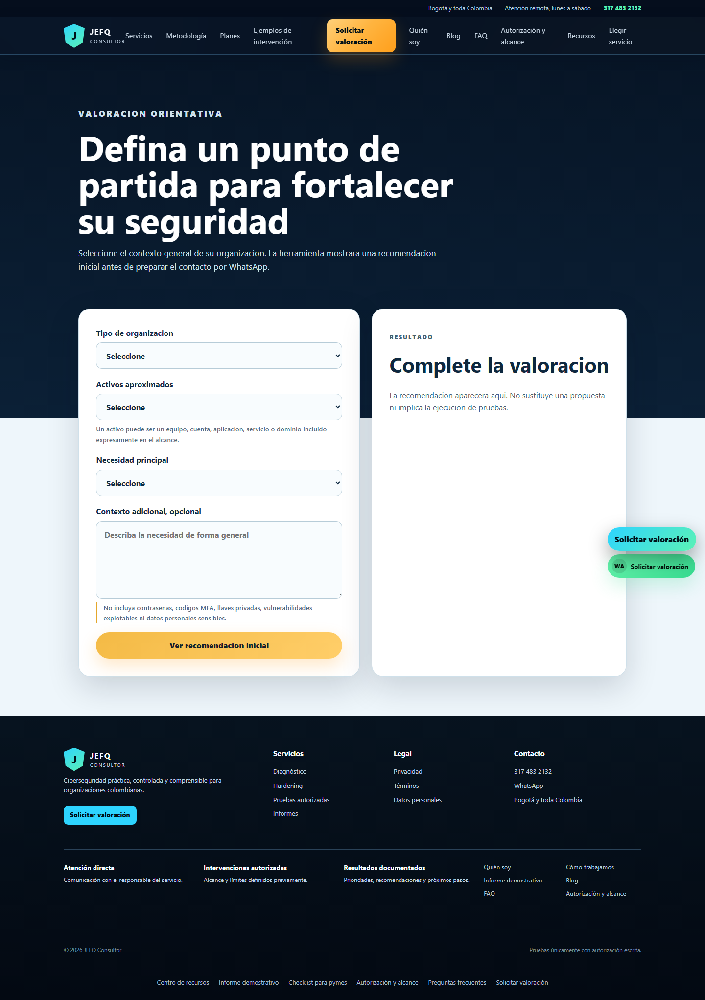
Texto <14 px: 39 · Texto <16 px: 53 · Secciones: 2 · Tarjetas aprox.: 4
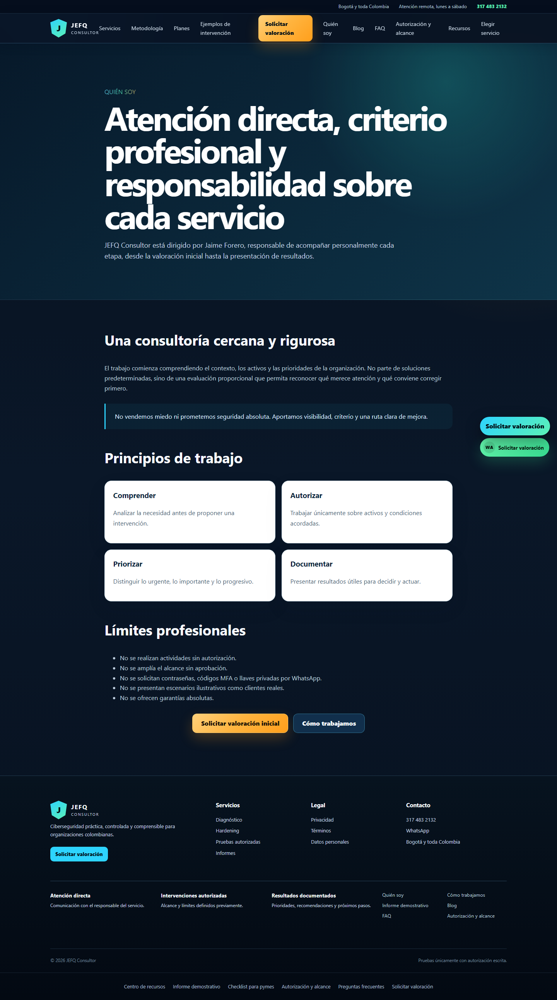
Texto <14 px: 39 · Texto <16 px: 53 · Secciones: 2 · Tarjetas aprox.: 5
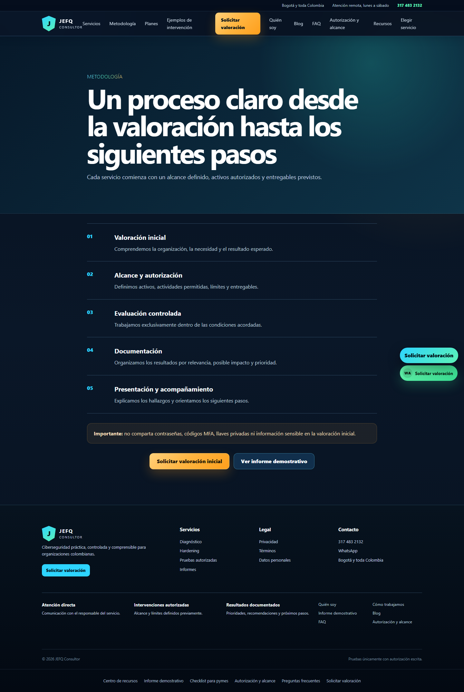
Texto <14 px: 39 · Texto <16 px: 53 · Secciones: 3 · Tarjetas aprox.: 0
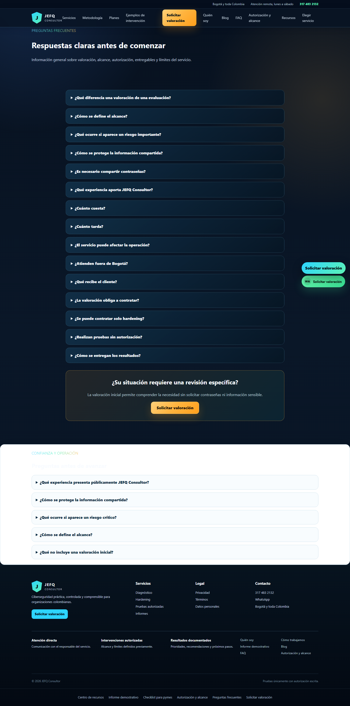
Texto <14 px: 45 · Texto <16 px: 59 · Secciones: 4 · Tarjetas aprox.: 6
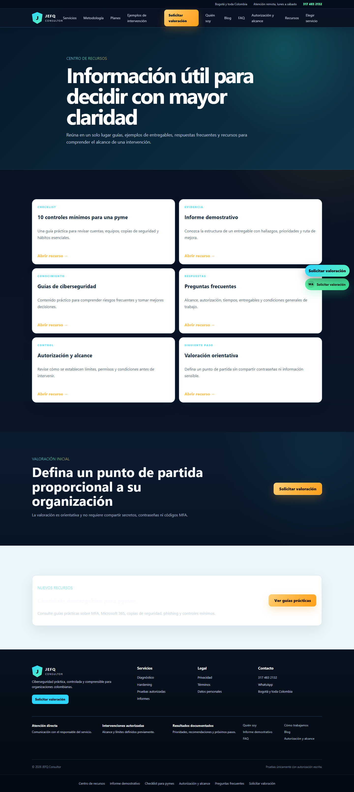
Texto <14 px: 45 · Texto <16 px: 59 · Secciones: 4 · Tarjetas aprox.: 8
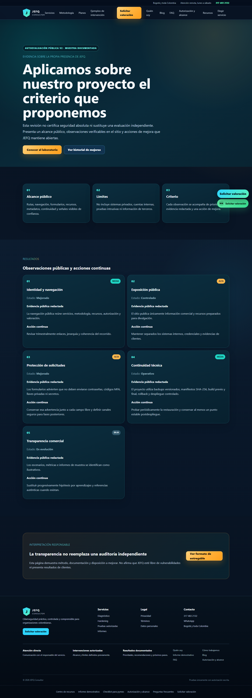
Texto <14 px: 40 · Texto <16 px: 54 · Secciones: 4 · Tarjetas aprox.: 11
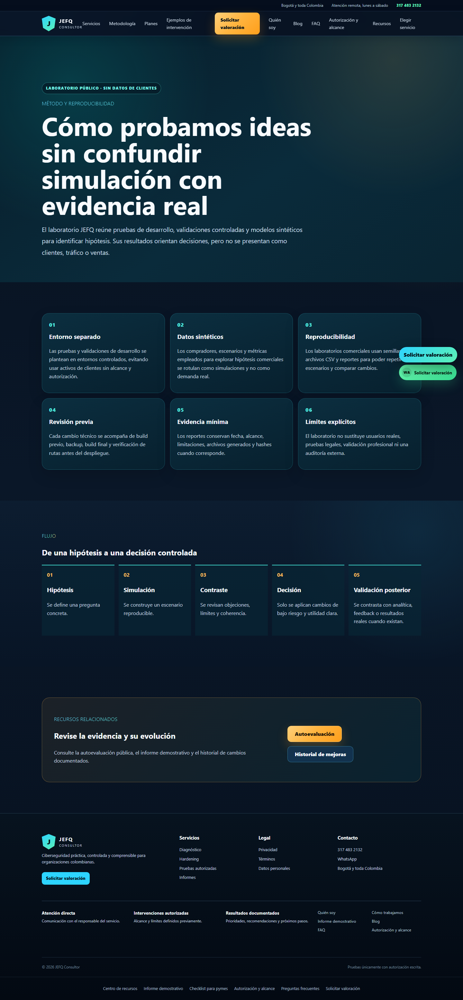
Texto <14 px: 39 · Texto <16 px: 53 · Secciones: 2 · Tarjetas aprox.: 0
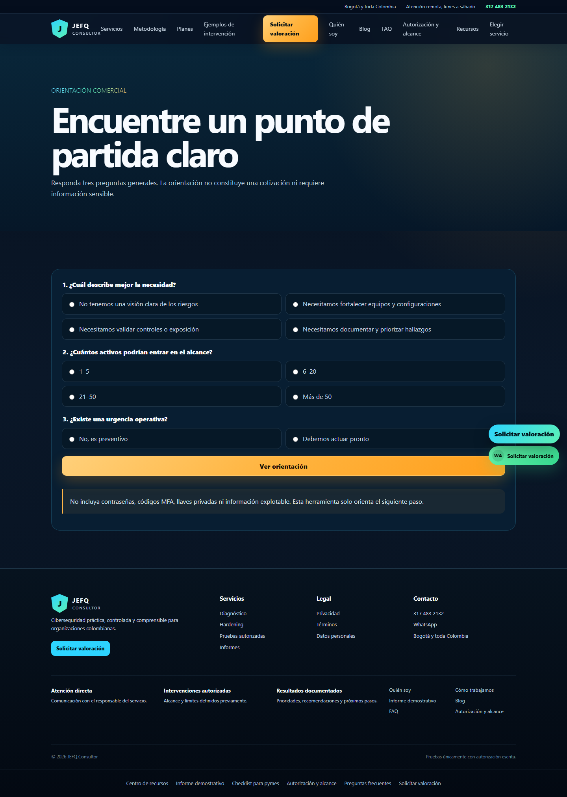
Texto <14 px: 123 · Texto <16 px: 141 · Secciones: 15 · Tarjetas aprox.: 63
Texto <14 px: 43 · Texto <16 px: 46 · Secciones: 2 · Tarjetas aprox.: 6
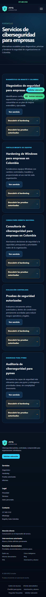
Texto <14 px: 39 · Texto <16 px: 42 · Secciones: 5 · Tarjetas aprox.: 6
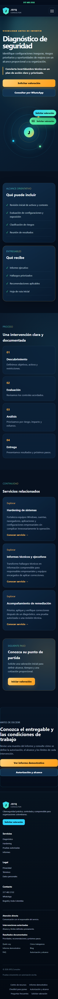
Texto <14 px: 39 · Texto <16 px: 42 · Secciones: 5 · Tarjetas aprox.: 6
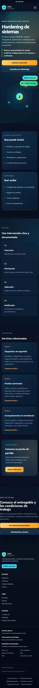
Texto <14 px: 39 · Texto <16 px: 42 · Secciones: 5 · Tarjetas aprox.: 6
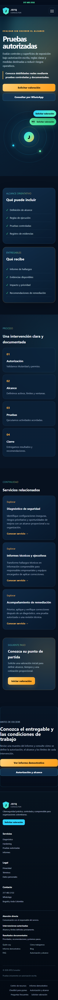
Texto <14 px: 86 · Texto <16 px: 89 · Secciones: 4 · Tarjetas aprox.: 16
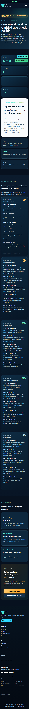
Texto <14 px: 41 · Texto <16 px: 44 · Secciones: 2 · Tarjetas aprox.: 0
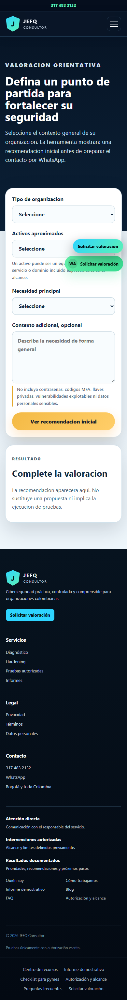
Texto <14 px: 38 · Texto <16 px: 41 · Secciones: 2 · Tarjetas aprox.: 4
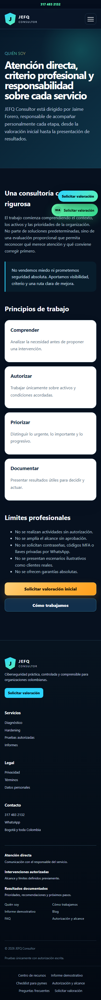
Texto <14 px: 38 · Texto <16 px: 41 · Secciones: 2 · Tarjetas aprox.: 5
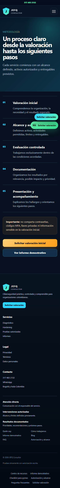
Texto <14 px: 38 · Texto <16 px: 41 · Secciones: 3 · Tarjetas aprox.: 0
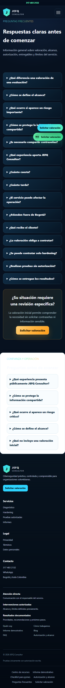
Texto <14 px: 44 · Texto <16 px: 47 · Secciones: 4 · Tarjetas aprox.: 6
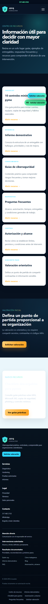
Texto <14 px: 44 · Texto <16 px: 47 · Secciones: 4 · Tarjetas aprox.: 8
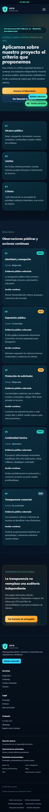
Texto <14 px: 39 · Texto <16 px: 42 · Secciones: 4 · Tarjetas aprox.: 11
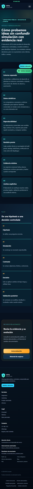
Texto <14 px: 38 · Texto <16 px: 41 · Secciones: 2 · Tarjetas aprox.: 0
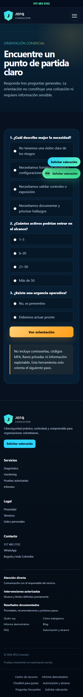